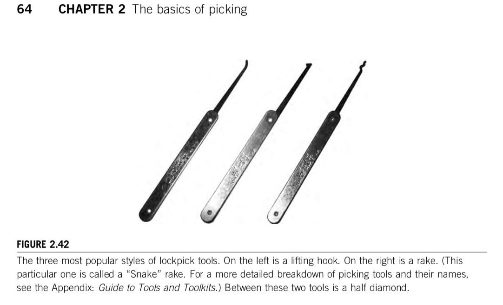

I spend a lot of time staring at a computer screen. Over spring break, I wanted to give my eyes and my mind a change of pace. I chose to spend my Spring break locking picking.
I focused on three kinds of locks. Pin and tumbler locks, Wafer locks and handcuffs.
There are many different ways to pick a lock. For more information about the basics check out the text “Practical Lock picking”. The lifting method and the rake method are effective for both pin and tumbler locks and wafer locks.
The lifting method is my personal favorite. It requires skill and knowhow. The lifting method focuses on applying gentle pressure to a one pin at a time until all the pins are in the upward position. Then the lock smoothly and elegantly falls open. Well, that’s the goal anyway. The lifting method is oh, so satisfying when it works out nicely. The mellifluous click of a lock springing open is oddly rewarding.
The lifting method has its drawbacks. Oversetting pins is an issue I often encounter. When too much pressure is placed on the tension wrench, pins can be shoved upward instead of placed. It’s hard to tell if a pin is placed poorly and the only remedy is to release all pins in the lock and start over.
Raking is a method similar to a brute force hack. Basically, one just gives the pins a good old-fashioned shake around until they all end up where they should be. It works but I wouldn’t describe this technique as elegant.
The author of Practical Lock Picking, Deviant Ollam is a big fan of the “hybrid method”. Just rake the lock a bit, see what you get. Then perhaps place the few remaining pins if the rake wasn’t completely effective. The diamond pick is a really good tool to use with this method. It’s shaped in such a way that it can both scrub the pins and place the pins. In good humor, Deviant Ollam referred to the diamond pick as the offspring of a rake and a lifting hook.
Handcuffs are interesting to experiment with because they can be either very easy or very hard depending on the tools available to you. Most handcuffs are basically the same. There is one basic handcuff key that unlocks most handcuffs. If I have my handcuff key handy I can be free in seconds, If I have a hairpin I can be free in minutes, If I have a wooden toothpick there is no telling how long I will be sitting there.